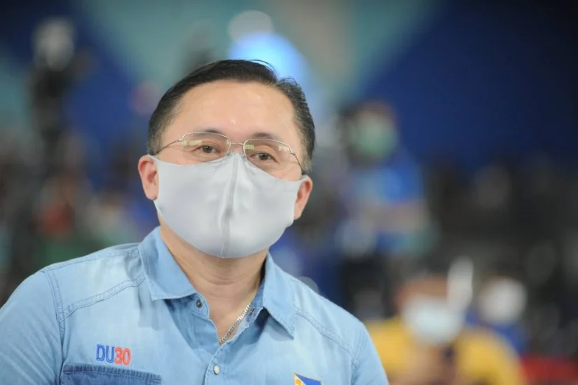

THE government has mounted full-blown relief efforts in areas in Northern Luzon that were jolted by a 7.3-magnitude earthquake last Wednesday.
President Ferdinand "Bongbong" Marcos Jr. on Thursday flew to Abra, which was the worst hit by the earthquake, to inspect and assess the resulting damage. He was joined by Secretaries Benjamin "Benhur" Abalos Jr. of Interior and Local Government, Erwin Tulfo of Social Welfare and Development, Jose Faustino Jr. of National Defense, and Anton Lagdameo, special assistant to the President.
At a situation briefing in the town of Bangued, Marcos ordered national government agencies to work closely with local governments "so that we can make sure na walang nangangailangan na hindi natin nabigyan ng tulong (that anyone needing our help will not be denied).
"We will just have to do as much as we can, as quickly as possible," he said.
With power in the entire province restored and communication lines and internet service steadily stabilizing, the President said the next step is to ensure all affected residents have enough food and potable water.
Bong Go sends aid to Cagayan residents
THE Office of Sen. Christopher Lawrence "Bong" Go on Monday, July 25, provided necessary assistance to struggling residents in Enrile, Cagayan as part of the senator's efforts to mitigate the adverse impacts of the pandemic.
Go's team mounted the relief effort at the municipal hall for 561 beneficiaries. The team distributed vitamins, masks, shirts and snacks to the residents. They also gave phablets, shoes and watches to select individuals.
Furthermore, as part of Go's efforts to motivate more Filipinos to engage in sports, his team gave away bicycles and balls for basketball and volleyball to some residents. Go serves as the chairman of the Senate Committee on Sports.
In his video message, Go noted how sports can significantly improve one's health and lifestyle, saying, "My countrymen, engage yourselves into sports. It is good for your health and for your daily activities in life. It is better to play basketball or volleyball instead of having vices."
The Department of Social Welfare and Development (DSWD) also assessed beneficiaries who may be eligible for livelihood assistance grants through its Sustainable Livelihood Program.